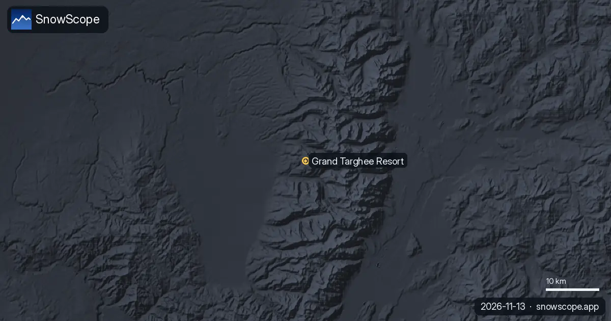
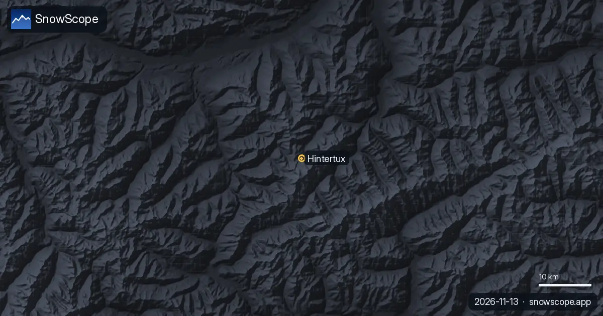
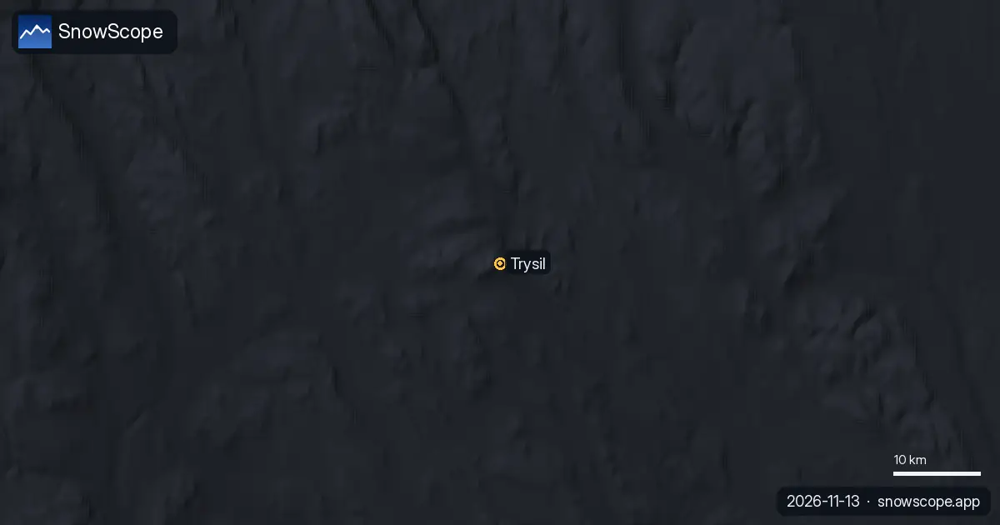
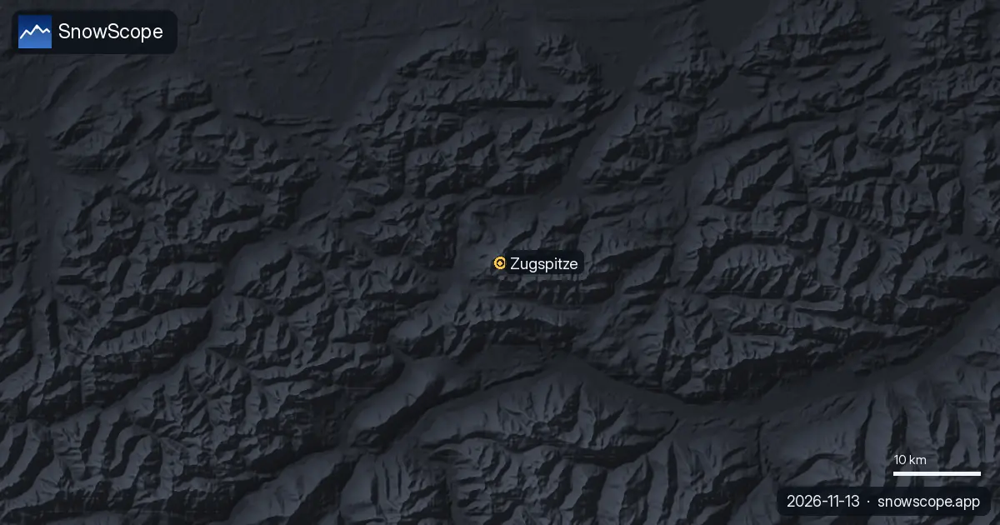
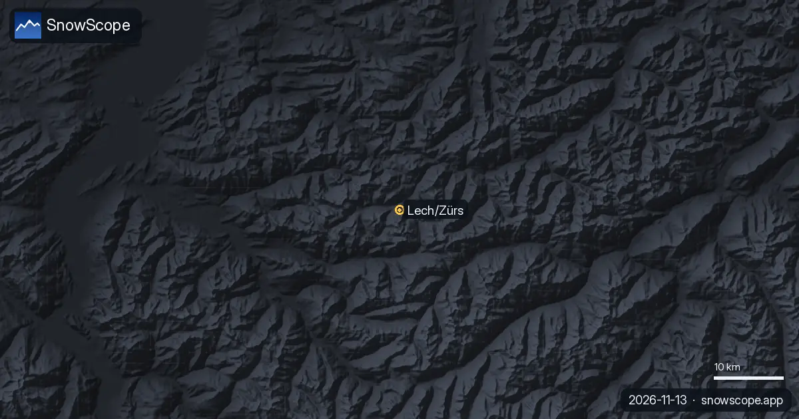
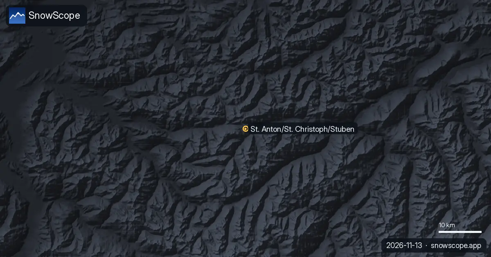
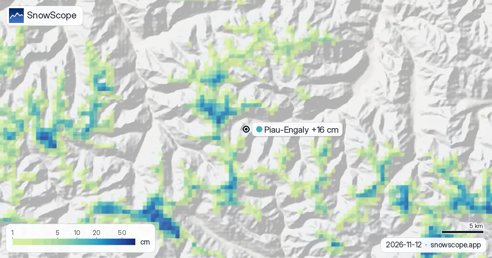

Bulletins neige
Des bulletins neige quotidiens pour les skieurs : où est la neige, ce qui arrive et où skier, d'après la carte de neige SnowScope et les stations de mesure. Chaque chiffre vient des données du jour.

Planifiez votre séjour de décembre 2026 aux Les Orres en comparant les prix des forfaits hebdomadaires avec notre historique de neige de 46 hivers passés.

Hemavan en décembre : 82 cm à mi-pente un 15 décembre typique, chaque hiver avec 30 cm à la mi-décembre ; le décembre le plus enneigé de notre sélection nordique.

Les forfaits journée de Brighton démarrent à 72 $ pour 2026/27 en achat anticipé. À mi-montagne, on compte en général 37 in (94 cm) de neige le 15 décembre, contre 25 in (64 cm) à Park City.

Comparez Grandvalira et les stations espagnoles en décembre 2026 pour les hauteurs de neige, l'altitude des remontées et les prix à partir de 49,00 EUR.

Glacier du Pitztal en décembre : 87 cm à mi-pente un 15 décembre typique, plus de neige qu'aux années 1980 ; forfait journée 77 EUR, 6 jours 410 EUR.

16 stations de ski américaines économiques classées selon leurs chances de neige en décembre sur 46 hivers passés, avec les prix à la journée vérifiés : de 49 $ en semaine à 125 $ et plus.

Pour une semaine de ski en famille à petit budget à Astún-Candanchú en décembre, visez la fin du mois, quand les pistes supérieures ont une bonne neige dans 67 % des hivers passés.

Allemagne en décembre : la Zugspitze et le haut du Fellhorn avaient 30 cm mi-décembre dans au moins 9 hivers sur 10 ; Sudelfeld, Brauneck et le Feldberg rarement.

Puy-Saint-Vincent propose un forfait adulte 1 jour à 44 EUR avec une bonne neige en décembre en altitude, comparé ici à son grand voisin Serre Chevalier.

Sur nos 46 derniers hivers, Grand Targhee affichait toujours au moins 20 in (50 cm) à mi-pente le 15 décembre. Le billet journée en ligne coûte entre 125 $ et 180 $ selon la date.

Oppdal en décembre : 60 cm en bas (585 m) un 15 décembre typique, 93 % des hivers avec 30 cm à la mi-décembre, mieux que le bas de Trysil.

Grimentz-Zinal propose 71 km de pistes et un enneigement fiable en altitude pour votre voyage en décembre, avec des forfaits 6 jours à CHF 339,00.

Autriche avant Noël : Galtür 258 EUR et Kühtai 269 EUR les 6 jours, avec 30 cm dans plus de 90 % des hivers ; les glaciers coûtent plus, les petites stations sont un pari.

Vous prévoyez un voyage en décembre à Baqueira Beret ? Consultez notre historique d'enneigement, les prix des forfaits à partir de 70,00 € pour une journée, et comparez avec Astún-Candanchú.

Nous classons les stations de ski françaises selon les probabilités de neige en décembre et le prix des forfaits, à partir de 36,00 EUR pour un forfait journée adulte aux Karellis.

À Oukaïmeden, décembre donne 18 cm à mi-pente dans un mois typique, contre 44 cm en février et 53 cm en mars. Ce que 46 hivers disent du bon mois pour skier.


Galtür en décembre : 55 cm à mi-pente un 15 décembre typique, 93 % des hivers avec 30 cm à la mi-décembre ; journée basse saison 55,50 EUR jusqu'au 18 décembre.

Geilo en décembre : 57 cm à mi-pente un 15 décembre typique, 96 % des hivers avec 30 cm à la mi-décembre ; journée à partir de 590 NOK (environ 56 EUR).

Grandvalira est souvent vendue comme une destination pas chère en décembre, pourtant la neige naturelle à la base n'atteint en moyenne que 9 cm lors des hivers passés.

Hemsedal en décembre : 70 cm à mi-pente et 106 cm au sommet un 15 décembre typique, mais 32 cm en bas ; Geilo tout près à partir de 590 NOK la journée.

Glacier d'Hintertux en décembre : 98 cm à 3245 m et 52 cm à mi-pente un 15 décembre typique ; forfait journée 82 EUR, 6 jours 399 EUR.

Comparez les probabilités de neige en décembre et les tarifs vérifiés de forfaits dès 40,00 EUR dans les domaines skiables italiens pour votre week-end en voiture.

Skier à Kühtai en décembre : 60 cm au pied des pistes (1939 m) un 15 décembre typique, forfait 6 jours basse saison à 269 EUR jusqu'au 18 décembre.

Les 2 Alpes culmine à 3 511 m pour de la neige abondante en décembre 2026, avec un forfait adulte 6 jours à 266,50 EUR.

Les Karellis propose 45 km de pistes et un forfait adulte 6 jours à 191,00 EUR avec 98 % de chances d'avoir de la neige à mi-montagne fin décembre.

Levi en décembre : 38 cm un 15 décembre typique, 91 % des hivers avec 30 cm la semaine de Noël, et plus de neige qu'avant ; journée 60 EUR, 57 EUR en ligne.

Skiez à Livigno pour 51,50 EUR par jour avant le 18 décembre, quand la neige au sommet atteint 30 cm dans 100 % des hivers passés.

À Michlifen, 89 % des hivers n'ont presque pas de neige le 15 décembre (moins de 5 cm). Ce que 46 hivers disent du ski dans le Moyen Atlas en décembre.

Montgenèvre affiche 56 cm de neige habituelle en décembre à son pied de station, offrant aux skieurs du week-end une meilleure couverture précoce que Sestriere, de l'autre côté de la frontière.

Skier à Obertauern en décembre : 43 cm un 15 décembre typique à mi-pente, forfait 6 jours à 331 EUR avant Noël. Historique de neige et prix.

Oukaïmeden à la mi-décembre : 16 cm à mi-pente dans un hiver typique, 50 cm ou plus dans 11 % des hivers seulement. Date par date, ce que disent 46 hivers.

Oukaïmeden est à 50 km à vol d'oiseau de Marrakech. Comment réussir un week-end de ski en décembre : quand partir, quelles chances de neige, ce qu'on sait des prix.

Les 3 Vallées : 75,70 € le jour du 5 au 18 décembre 2026. Oukaïmeden : pas de tarif officiel en ligne, 16 cm à mi-pente mi-décembre. Le vrai comparatif.

Pila, au-dessus d'Aoste, combine un forfait journée fixe à 60,00 EUR et une neige fiable en décembre sur ses pistes d'altitude.

Les remontées de Saas-Fee atteignent 3 556 m, où notre historique montre que 100 % des hivers passés ont au moins 30 cm de neige à la mi-décembre.

12 stations nordiques en décembre : Hemavan, Hemsedal et Geilo avaient 30 cm à mi-pente mi-décembre dans 96 à 100 % des hivers ; journées finlandaises 58-60 EUR.

Chances de neige en décembre sur 46 hivers et prix journaliers vérifiés : Ski Cooper 49 $, Les 3 Vallées 75,70 €, Oukaïmeden sans tarif officiel. Là où une journée de ski pas chère en décembre fonctionne.

Découvrez les pistes tranquilles de St-Luc Chandolin, où la neige à mi-montagne atteint 30 cm dans 98 % des hivers fin décembre.

Trysil en décembre : 44 cm à mi-pente un 15 décembre typique, 83 % des hivers avec 30 cm à la mi-décembre ; les prix sont dynamiques, réservez tôt.

Valloire-Valmeinier propose 131 km de pistes et 98 % de chances d'avoir 30 cm de neige à mi-montagne mi-décembre.

Zugspitze en décembre : 122 cm à 2627 m un 15 décembre typique, journée adulte 70,50 EUR en ligne ; le Garmisch-Classic en dessous 69 EUR, avec bien moins de neige.

Mölltaler Gletscher en décembre : 66 cm en bas (2103 m) et 128 cm à mi-pente un 15 décembre typique ; forfait 6 jours basse saison à 332 EUR.

Le Mt. Baker en décembre : 46 in (116 cm) de neige à mi-montagne pour un 15 décembre type, et un forfait à 98,80 $ du lundi au jeudi, vendu uniquement sur place le jour même.

Un débutant prudent peut-il faire confiance à Courmayeur en décembre, alors que la moyenne à mi-montagne est de 60 cm de neige sur nos hivers passés ?

Åre en décembre : 40 cm à mi-pente un 15 décembre typique, 89 % des hivers avec 30 cm à la mi-décembre, mais une forte baisse au sommet depuis les années 1980.

Surface enneigée : 49 467 sq mi (128 120 km²) le 11 novembre, 49 050 sq mi (127 040 km²) aujourd'hui, 64 429 sq mi (166 870 km²) prévus le 16 …

Entre aujourd'hui et le 16 novembre, nous attendons 5 in (12 cm) à Stowe, 4 in (11 cm) à Bolton Valley Resort et 4 in (10 cm) à Sugarbush Resort. Nos …

201 390 km² : c'est la surface enneigée que compte notre modèle dans l'Ouest canadien aujourd'hui. La dernière vue dégagée de chaque endroit, …

Conditions de ski à Deer Valley le 13 novembre 2026 : pas encore de vraie neige au sol, environ 4 in près du sommet avec la tempête du week-end, pluie côté East Village sous environ 6,700 à 7,600 ft, et 11 in en haut sur la semaine.

Est-ce un bon début d'hiver dans le Nord-Est américain ? La neige du jour dans 4 stations dans le Nord-Est américain, comparée à la même date lors de …

Entre aujourd'hui et le 16 novembre, nous attendons 13 in (34 cm) à Bear Valley, 13 in (34 cm) à Dodge Ridge et 13 in (33 cm) à Badger Pass. Un mot …

Prévision de neige à Park City (Utah) le 13 novembre 2026 : presque pas de neige au sol pour l'instant, environ 5 in près du sommet avec la tempête du week-end et une limite pluie-neige de 7,400 à 7,700 ft, pluie en bas, et environ 12 in en haut sur la semaine.

Stratton par altitude, selon notre modèle : sommet 4 in (10 cm) (3 881 ft / 1 183 m), milieu 2 in (6 cm) (2 936 ft / 895 m), bas 1 in (2 cm) …

La réserve de neige se remplit-elle comme d'habitude ? Nous avons comparé la neige du jour dans 5 stations dans l'Ouest canadien avec la même date …

Prévisions de neige à Alpental le 13 novembre 2026 : environ 1 in sur le haut de la montagne, pluie presque jusqu'au sommet ce week-end avec une limite vers 5,400 à 5,600 ft, puis 4 à 5 in de pluie et neige mêlées en haut la semaine prochaine.

Point neige à Bogus Basin pour les skieurs de Boise le 13 novembre 2026 : pas encore de neige au sol, pluie et neige mouillée ce week-end avec une limite vers 6,300 à 6,800 ft, puis de l'air plus froid et environ 8 in au sommet d'ici la semaine prochaine.

39 in (99 cm) en haut du domaine : voilà pourquoi Telluride est en tête de notre liste. Hauteur du jour, neige fraîche des 72 dernières heures, …

Le plan des pistes de Sillian (Hochpustertal) avec notre couche de neige le 13 novembre 2026 : 8,6 cm au sommet à 2399 m, bas des pentes à nu, et une semaine de pluie et neige mêlées avec une limite vers 1 800 à 2 000 m.

Revelstoke, prévisions neige : jusqu'à 10–21 cm attendus d'ici le 16 novembre (Ouest canadien). À Whistler Blackcomb, l'isotherme 0 °C monte entre …

Conditions de neige à Silvretta Montafon le 13 novembre 2026 : 4,5 cm au sommet à 2421 m, mi-pente et vallée à nu, environ 40 cm attendus en altitude cette semaine, pluie dans la vallée sous 1 500 m.

Bulletin neige de Lech Zürs du 13 novembre 2026 : environ 6 cm au sommet (2436 m) et à mi-pente, rien à Lech à 1430 m. Cette semaine 42 cm en haut selon notre prévision, jusqu'à 91 cm selon d'autres, pluie et neige mêlées vers 1400 m. Et pourquoi Lech est le côté enneigé de l'Arlberg.

Modèle plus prévision dans les Alpes aujourd'hui donnent poudreuse fraîche. Quoi porter, quoi emporter et quand skier, station par station. Les …

Hauteur de neige à St. Anton am Arlberg le 13 novembre 2026 : environ 1 cm au sommet (2642 m), 5 cm à mi-pente, rien au village. Cette semaine 42 cm au sommet et 33 cm à mi-pente, pluie sous 1480 m environ. Combien de neige il faut pour les pentes raides.

Dévoluy, tendance neige : jusqu'à 24–32 cm possibles d'ici le 16 novembre (Alpes). D'ici le 16 novembre, notre prévision donne 35 cm à Orcières …

Depuis le 11 novembre, la couverture neigeuse est passée de 39 090 km² à 76 100 km² ; le 16 novembre, la prévision donne 57 910 km². Pfelders a le …

Les stations de ski de l'Atlas ne gardent pas de neige sur leurs pentes aujourd'hui. La neige n'est stockée que sur les plus hauts sommets : environ …

Bulletin neige d'Obergurgl du 13 novembre 2026 : environ 20 cm au sommet (3024 m), 5 cm à mi-pente, rien aux remontées du bas (1784 m). Prévisions de la semaine : 34 cm en haut, 21 cm en bas, limite pluie-neige vers 1700 m. Et le début de saison habituel.

Hauteur de neige à Sölden le 13 novembre 2026 : environ 9 cm au sommet (3245 m), 5 cm à mi-pente, rien dans la vallée à 1346 m. 25 cm prévus en haut cette semaine, pluie sous 1620 m environ. Glacier contre village, avec 46 hivers passés.

Chutes de neige à Val Thorens, 13 novembre 2026 : 27 cm tombés au sommet (3175 m) et 17 cm à 2498 m en sept jours ; hauteur de neige de 50 cm et 8 cm. Sept prochains jours : 86 cm au sommet, 73 cm à 2498 m, limite pluie-neige bien sous le village. La saison habituelle sur 46 hivers.

La hauteur de neige à Chamonix le 13 novembre 2026, altitude par altitude : rien au fond de la vallée, 1 cm à 2001 m, 12 cm en haut de Brévent-Flégère (2486 m), 5 à 24 cm en haut des Grands Montets (2768 m). Environ un mètre prévu en altitude cette semaine, de la pluie dans la vallée. L'épaisseur habituelle sur 46 hivers.

Nos choix sont La Grave, Pfelders et Les Deux Alpes : nous avons regardé la hauteur de neige du jour, la neige fraîche des 72 dernières heures et la …

Hauteur de neige à Ischgl le 13 novembre 2026 : environ 5 cm au sommet (2868 m), 4 cm à mi-pente, rien dans la vallée à 1352 m. Jusqu'à 42 cm sur la crête cette semaine, pluie dans le Paznaun sous 1570 m environ. Et la vallée face à la crête sur 46 hivers.

Bulletin neige des Menuires du 13 novembre 2026 : 28 cm au sommet (2838 m), rien au sol à 2112 m ni à 1386 m. Environ 80 cm attendus au sommet en sept jours, limite pluie-neige vers 1500 à 1700 m. Pourquoi Val Thorens, 450 m plus haut dans la même vallée, en a déjà plus.

L'isotherme 0 °C décide si les montagnes stockent de la neige ou rendent de la pluie : ces prochains jours, notre prévision la place entre 2 230 m et …

Les conditions de neige à Tignes le 13 novembre 2026 : 42 cm au sommet (3447 m), 12 cm à 2503 m, une vallée sans neige à 1559 m, et 99 cm prévus au sommet sur sept jours, avec de la pluie sous 1700 m environ. La comparaison avec 46 hivers passés.

Neige fraîche à La Grave : 61 cm en 72 heures, dont 3 cm sur les dernières 24. Notre modèle de neige place maintenant environ 78 cm sur le haut du …

Notre modèle de neige prévoit que Whistler Blackcomb recevra 88 cm de neige fraîche d'ici le lundi 16 novembre 2026, dominant les stations mondiales.

Notre prévision met l'isotherme 0 °C dans le Nord-Est américain entre 0 ft (0 m) et 4 593 ft (1 400 m) dans les jours à venir. Le jeudi 12 novembre, …

Y a-t-il plus de neige qu'il y a un an ? Nous avons comparé aujourd'hui avec le 12 novembre de l'hiver dernier dans 4 stations dans le Nord-Est …

Entre 1 380 m et 3 410 m : c'est là que notre prévision place l'isotherme 0 °C dans l'Ouest canadien ces prochains jours. Aux heures les plus douces, …

Les cartes du jour regardent deux semaines devant dans les Pyrénées, du 13 novembre au 26 novembre. Elles viennent de les deux modèles mondiaux qui …

Où va-t-il neiger dans le Nord-Est américain entre le 13 novembre et le 26 novembre, et combien ? Nous avons interrogé les deux modèles mondiaux qui …

Quatorze jours de neige fraîche sur une carte, du 13 novembre au 26 novembre, pour chaque montagne dans l'Ouest canadien : c'est ce qu'attendent les …

À Telluride, l'altitude change tout : notre modèle donne 0 in (0 cm) en bas (8 734 ft / 2 662 m), 2 in (6 cm) à mi-pente (10 620 ft / 3 237 m) et …

Voici les nouvelles cartes des deux prochaines semaines dans les Alpes, du 13 novembre au 26 novembre : la neige fraîche attendue sur le relief, lue …

Voici les nouvelles cartes des deux prochaines semaines dans l'Atlas (Maroc), du 13 novembre au 26 novembre : la neige fraîche attendue sur le …

Nos cartes à deux semaines montrent où la neige fraîche devrait tomber dans l'Ouest américain entre le 13 novembre et le 26 novembre, d'après les …

Whistler Blackcomb, 116 cm de neige : la hauteur du jour en haut du domaine (12 novembre). 162 cm : c'est la neige en haut du domaine de Mount …

Kirkwood, tendance neige : jusqu'à 16 in possibles d'ici le 15 novembre (Ouest américain). D'ici le 15 novembre, notre prévision donne 23 in (58 cm) …

Mount Cain Alpine Park, neige fraîche comparée à la région : 15 cm en 72 heures (12 novembre). La surface enneigée est passée de 281 250 km² le 10 …

Cimarron Mountain Club, 39 in de neige : la hauteur du jour en haut du domaine (12 novembre). 42 in (106 cm) : c'est la neige en haut du domaine de …

Le bulletin ski de Purgatory Resort (Durango, Colorado) selon notre modèle de neige : 3 in (7 cm) au sommet, bas et mi-pente sans neige, 4 à 7 in de neige fraîche prévus dans les sept prochains jours, et à quoi ressemble un hiver habituel à Purgatory.

Mount Cain Alpine Park : combien de neige arrive ? 37 cm d'ici le 15 novembre. Combien de neige arrive dans l'Ouest canadien, et où ? D'ici le 15 …

Notre modèle découpe Piau-Engaly en trois altitudes : 2 cm au sommet (2 527 m), 0 cm à mi-pente (2 144 m), 0 cm en bas (1 762 m). En 72 heures, 16 cm …

Bulletin neige dans l'Atlas (Maroc), 12 novembre. Stations de l'Atlas aujourd'hui : pas de neige sur les pentes. De la neige seulement sur les plus …

Bulletin neige dans les Pyrénées, 12 novembre. D'ici le 15 novembre, la prévision apporte 33 cm à Cauterets Cirque du Lys, 29 cm à Piau-Engaly et …

Les conditions de neige à La Rosière sur notre calcul du 11 novembre : 24 cm au sommet (2799 m), mi-pente et village sans neige, et une prévision à sept jours de 108 cm au sommet et 61 cm à mi-pente. Le versant ensoleillé du Petit-Saint-Bernard en chiffres.

La neige à l'Alpe Devero (Ossola, Piémont) selon notre modèle : 2 cm au sommet (2201 m), rien en dessous, 36 cm de neige fraîche prévus au sommet dans les sept prochains jours. La petite station sans voitures et son hiver habituel en chiffres.

Le bulletin neige des Arcs selon notre modèle : 34 cm au sommet (3205 m), 2 cm à mi-pente, un bas sans neige, et jusqu'à 69 cm de neige fraîche prévus au sommet dans les sept prochains jours. Ce que Les Arcs ont d'habitude en novembre et en décembre.

Les conditions de neige à Méribel selon notre modèle du 11 novembre : 24 cm au sommet (2920 m), 1 cm à mi-pente, une vallée sans neige, et une prévision de 99 cm au sommet et 58 cm à mi-pente sur les sept prochains jours. L'hiver habituel de Méribel en chiffres.

Le plan des pistes d'Isola 2000 avec la neige du jour : 9 cm au sommet, 7 cm à mi-pente, 2 cm en bas après 31 cm en une semaine, comment s'organisent les secteurs Pelevos, Saint-Sauveur et Lombarde, et ce qu'apporte un hiver habituel.

Pas encore de neige à Oukaïmeden : 0 cm aux trois altitudes, rien ces sept derniers jours, rien dans la semaine à venir. Ce que donne un novembre habituel dans le Haut Atlas et quand viser le ski.

À 1 308 m à Dent de Vaulion, les 0 cm du jour dépassent ce que cette date a donné lors de 34 des 46 hivers passés (habituel : 0 cm) : une bonne …

La zone blanche sur la carte est passée de 45 820 km² (9 novembre) à 38 440 km² aujourd'hui, et la prévision dit 46 730 km² le 14 novembre. Glacier …

Les Deux Alpes, prévisions neige comparées à la région : 51 cm d'ici le 14 novembre. La surface enneigée est passée de 45 820 km² le 9 novembre à …

Bulletin neige dans les Alpes, 11 novembre. Trois données, une sélection : la hauteur de neige du jour, la neige fraîche des 72 dernières heures et …

Depuis le 9 novembre, la neige est passée de 40 km² à 20 km² aujourd'hui ; pour le 14 novembre, notre prévision donne 10 km². Aujourd'hui, les pistes …

Y a-t-il plus de neige qu'il y a un an ? Nous avons comparé aujourd'hui avec le 11 novembre de l'hiver dernier dans 4 stations dans les Pyrénées : 0 …

D'après notre modèle de neige et notre prévision, la journée dans les Pyrénées apporte neige fine de début de saison et de l'air doux qui peut …

Bulletin neige dans le Nord-Est américain, 11 novembre. D'ici le 14 novembre, la prévision donne 15 in (38 cm) à Okemo Mountain, 12 in (30 cm) à …

Ces prochains jours, l'isotherme 0 °C dans l'Ouest américain devrait bouger entre 8 333 ft (2 540 m) et 13 780 ft (4 200 m), selon notre prévision. …

Bulletin neige dans l'Ouest américain, 11 novembre. D'ici le 14 novembre, la prévision donne 17 in (43 cm) à Mt. Shasta Ski Park, 15 in (39 cm) à …

Y a-t-il plus de neige qu'il y a un an ? Nous avons comparé aujourd'hui avec le 11 novembre de l'hiver dernier dans 4 stations dans l'Ouest américain …

Est-ce un bon début d'hiver dans l'Ouest américain ? 5 stations dans l'Ouest américain, 46 hivers passés, une date : voici comment se situe …

Où aller skier dans l'Ouest américain ? Trois données, une sélection : la hauteur de neige du jour, la neige fraîche des 72 dernières heures et la …

38 cm en 72 heures : c'est la neige fraîche reçue par Tweedsmuir Ski Club. Tweedsmuir Ski Club a gagné 38 cm de neige fraîche en 72 heures, dont …

Notre modèle de neige et notre prévision du jour dans l'Ouest canadien annoncent poudreuse fraîche, une chute de neige en approche, matins glacés et …

Nous avons pesé la neige déjà au sol, la neige fraîche des 72 dernières heures et ce qu'ajoute la prévision, et retenu Whistler Blackcomb, Tweedsmuir …

Notre modèle de neige prévoit jusqu'à 58 cm de neige fraîche pour La Grave, France, d'ici le samedi 14 novembre 2026. Découvrez où d'autre la neige est attendue.